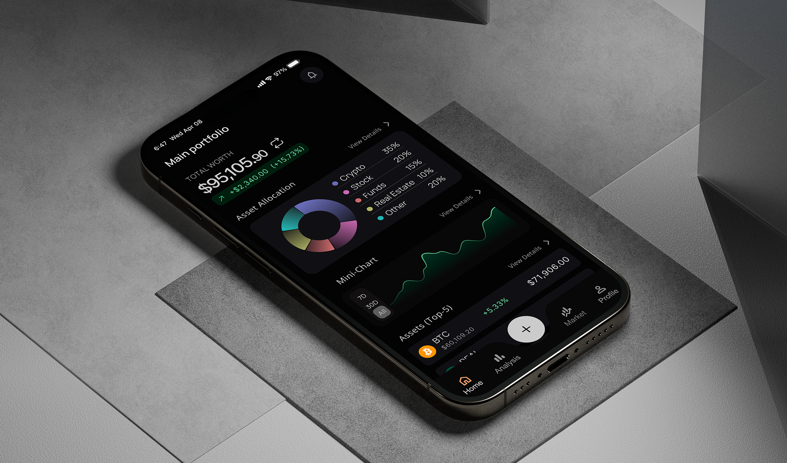
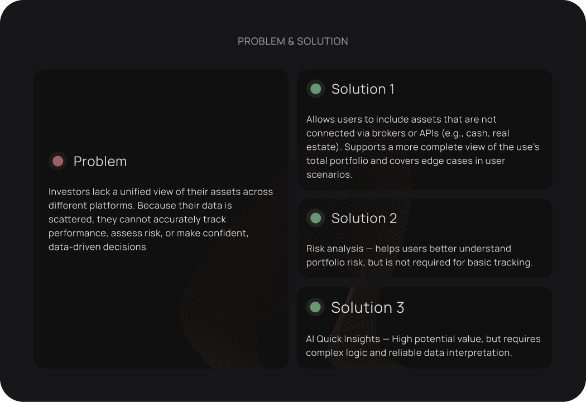
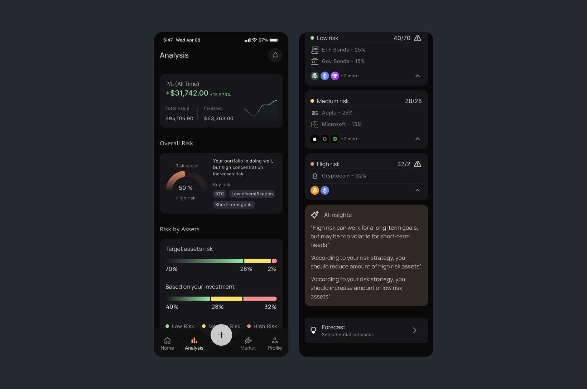
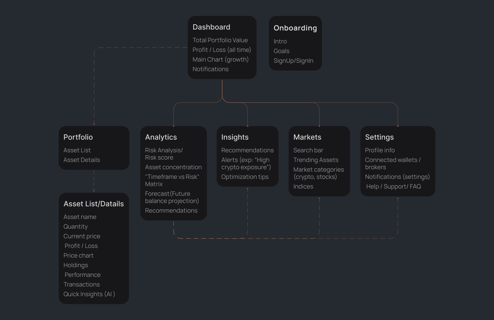
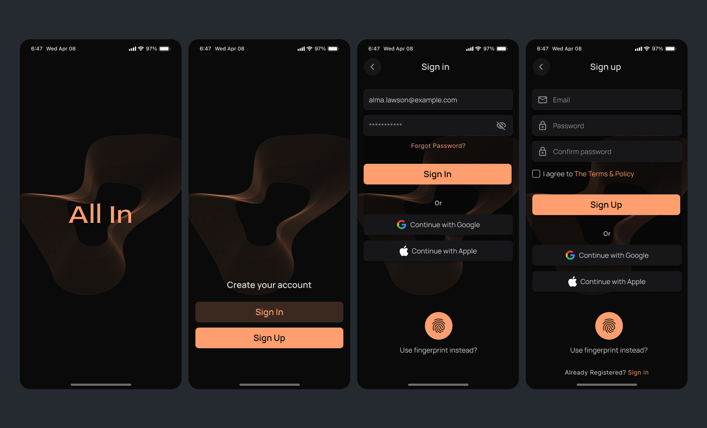
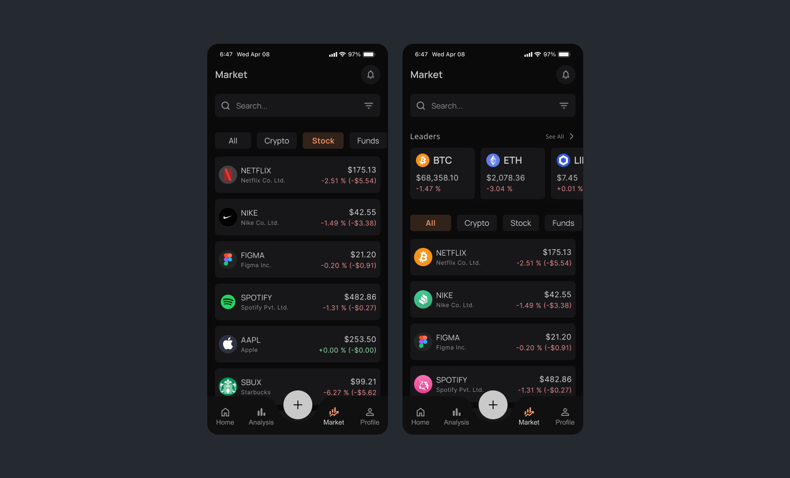
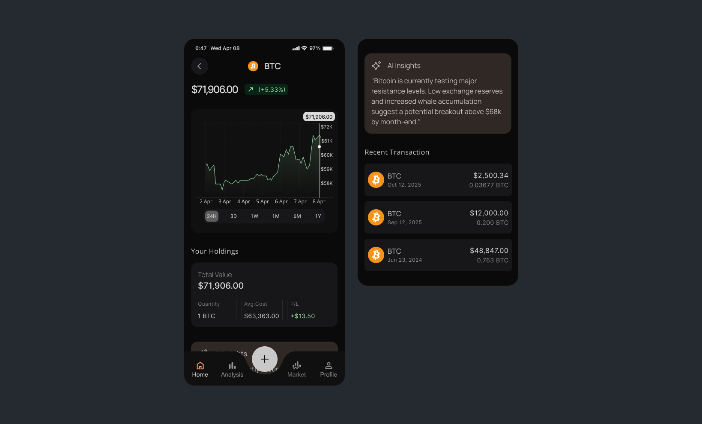
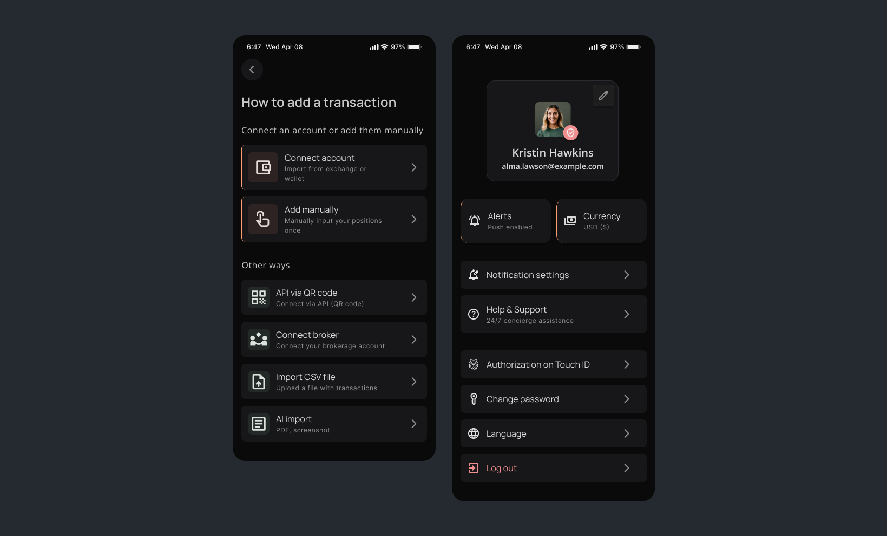

All in — Investment Analytics App
A full-scale investment analytics app designed to connect fragmented financial data. The app shows your portfolio, analyzes profit and loss, predicts future profitability, and helps you make smarter financial decisions — all in one place.

Objectives
- Build an app focused on deep analytics.
- Show a unified view of the investment portfolio.
- Analyze profit and loss clearly.
- Forecast future profitability.
- Help users make data-driven decisions.
Role
Product Designer · UX/UI, prototyping, and system design
Key Skills
- Prioritization matrix
- Competitor analysis
- Proto-personas
- Information Architecture
- Data Visualization
- Mobile Design Systems
Impact
- Clear portfolio overview
- AI-powered risk assessment
- Scalable mobile UI system
Three product problems shaped the redesign
Fragmented data across platforms
Investors lack a unified view of their assets because their data is spread across different brokers and apps. Users cannot connect assets not linked to APIs (e.g., cash, real estate) in a single app.
Dense content without hierarchy
Financial data is inherently complex. Charts, numbers, and metrics often compete for attention, making it hard for users to understand their portfolio's overall health at a glance.
Unclear risk and profitability
Users struggle to understand their portfolio risk and future profitability without the help of a financial advisor. The app needed to provide clear, AI-driven insights.
Unify all assets into one clear dashboard
I redesigned the portfolio dashboard to allow users to include all assets in one place. The new dashboard uses a dark theme and the Manrope font, with a custom color palette (Orange #FF9E6E) to highlight key metrics.

Add AI insights to clarify risk
To help users better understand their portfolio risk, I added an AI Insights section. This feature analyzes market context and provides clear, understandable recommendations without overwhelming the user.

Design return paths, not isolated features
IA was the foundation for building clear, intuitive navigation in the Investment analytics app. The goal was to help users move seamlessly between portfolio overview, asset management, market context, and analytics — without losing their place or feeling overwhelmed.

Key Screens
Explore additional views, including the onboarding flow, market tracking, and user profile settings.




What I learned
Research drives every decision
Data and user research should drive every design decision, not just aesthetics.
Less is often more
Removing unnecessary information often improves clarity more than adding new features. Good hierarchy helps users focus on what truly matters.
Iteration is key
Continuous iteration based on user feedback is what makes a design truly usable. The first version is never the final one.